Principais Artistas
Caetano Veloso
Nascido em 7 de agosto de 1942, Caetano Emanoel Viana Teles Veloso é um músico, produtor, arranjador e escritor brasileiro. Sua carreira musical começou em 1965 e seu principal sucesso é Sozinho, do álbum Prenda minha, que foi lançado em 1998. Na verdade, Sozinho foi composta por Peninha em 1997, assim como Sonhos, outro grande sucesso interpretado na voz de Caetano.
Sonhos
Sozinho
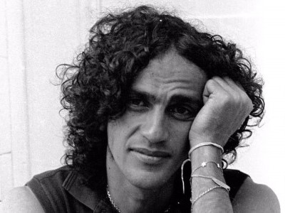
Cartola
Angenor de Oliveira, mais conhecido como Cartola (1908-1980) foi um cantor, compositor, poeta e violonista brasileiro. Sua carreira musical iniciou-se no Samba e depois também se encontrou no MPB. Seu maior sucesso é Preciso me encontrar, lançado em 1976.
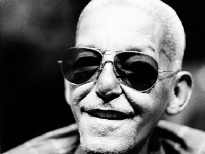
Cássia Eller
Cássia Rejane Eller, mais conhecida como Cássia Eller (1962-2001), foi uma cantora, compositora e multi-instrumentista brasileira. Foi uma das maiores representantes do rock brasileiro dos anos 90 e seus maiores sucessos são Malandragem e O Segundo Sol, ambas da década de 90.
O Segundo Sol
Malandragem
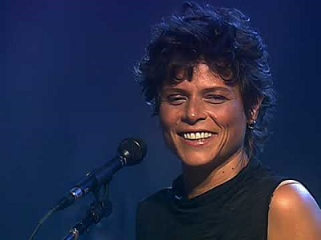
Cazuza
Agenor de Miranda Araújo Neto, mais conhecido como Cazuza (1958-1990), foi um cantor, compositor, poeta e letrista brasileiro. Inicialmente conhecido como vocalista e letrista da banda Barão Vermelho, posteriormente seguiu carreira solo e foi considerado um dos principais poetas da música brasileira. Seus principais sucessos enquanto integrante da banda foram Bete Balanço e Maior Abandonado, ambas lançadas em 1984.
Maior Abandonado
Bete Balanço
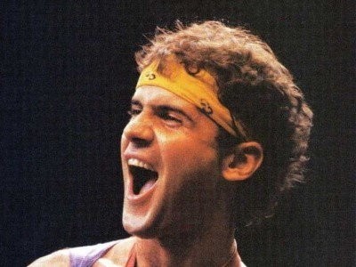
Chico Buarque
Francisco Buarque de Hollanda, mais conhecido como Chico Buarque, é um músico, dramaturgo, escritor e ator brasileiro. É conhecido por ser um dos maiores nomes da música popular brasileira, autoexilou-se na Itália em 1969 devido ao golpe militar e retornou no começo da década de 70 com o lançamento do álbum Construção. Seus maiores sucessos são A Banda e João e Maria.
João e Maria
A Banda
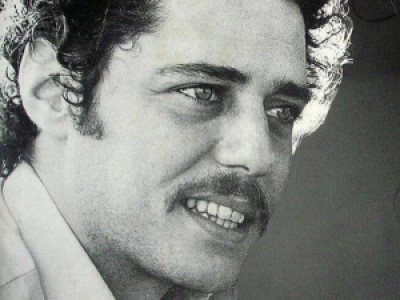
Djavan
Djavan Caetano Viana é um cantor, compositor, arranjador, produtor musical, empresário e violonista brasileiro. É um dos maiores símbolos do MPB e seus principais sucessos são Eu te devoro e Oceano.
Eu Te Devoro
Oceano
Gal Costa
Gal Maria da Graça Penna Burgos Costa, conhecida como Gal Costa (1945-2022), foi uma cantora, compositora e multi-instrumentista brasileira. Seus maiores sucessos são Meu Nome É Gal e Lágrimas Negras.
Meu Nome É GalLágrimas Negras
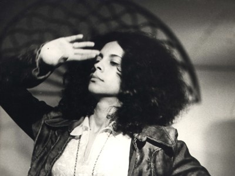
Gilberto Gil
Gilberto Passos Gil Moreira, é um cantor, compositor, multi-instrumentista, produtor musical, político e escritor brasileiro. É muito conhecido por ser autor da trilha sonora Sítio do Pica-Pau Amarelo.

Jorge Ben Jor
Jorge Duílio Lima Meneses, conhecido como Jorge Ben e Jorge Ben Jor, é um violonista, pandeirista, guitarrista, percussionista, cantor e compositor brasileiro. Sua música mais conhecida é Chove Chuva, do álbum Samba Esquema Novo, lançado em 1963.
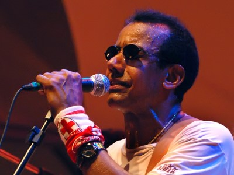
Milton Nascimento
Milton Nascimento é um cantor, compositor e multi-instrumentista brasileiro, reconhecido mundialmente como um dos mais influentes e talentosos músicos da Música Popular Brasileira. Sua faixa mais famosa no momento é Quem Sabe Isso Quer Dizer Amor, do álbum Alma Gêmea, de 2005.
Nando Reis
José Fernando Gomes dos Reis, conhecido artisticamente como Nando Reis, é um cantor, compositor, multi-instrumentista e produtor musical brasileiro. Já foi integrante da banda Titãs e o maior sucesso deles foi Marvin, de 1984.
Raul Seixas
Raul Santos Seixas, conhecido como Raul Seixas, foi um cantor, compositor, produtor e multi-instrumentista brasileiro, frequentemente considerado um dos pioneiros do rock brasileiro. Seus maiores sucessos são Metamorfose Ambulante e Maluco Beleza, ambas da década de 70.
Metamorfose AmbulanteMaluco Beleza
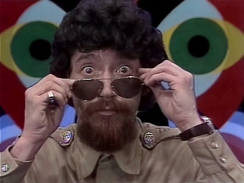
Rita Lee
Rita Lee Jones de Carvalho, conhecida como Rita Lee, é uma cantora, compositora, multi-instrumentista, atriz, escritora e ativista brasileira, de ascendência norte-americana e italiana. Sua música mais famosa é Lança Perfume e a mais recente é um feat com as ANAVITÓRIA, chamado Amarelo, Azul e Branco, no álbum mais recente da dupla, que se chama Cor.
Amarelo, Azul e BrancoLança Perfume

Roberto Carlos
Roberto Carlos Braga é um cantor, compositor e empresário brasileiro. Teve grande influência na Jovem Guarda e sua música mais conhecida é Amigo, de 1977.
Seu Jorge
Jorge Mário da Silva, conhecido pelo nome artístico de Seu Jorge, é um ator, cantor, compositor e multi-instrumentista brasileiro de MPB. Uma das suas músicas mais conhecidas é Quem Não Quer Sou Eu, do álbum Músicas para Churrasco, Vol. 1, de 2011.
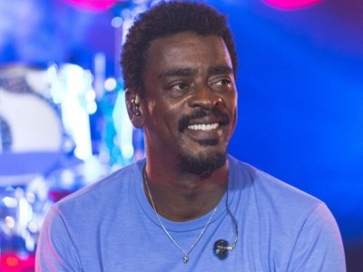Tim Maia
Tim Maia, nome artístico de Sebastião Rodrigues Maia, foi um cantor, compositor, maestro, produtor musical, instrumentista e empresário brasileiro. Suas músicas mais famosas são Gostava Tanto de Você e Ela Partiu, ambas da década de 70.
Gostava Tanto de VocêEla Partiu
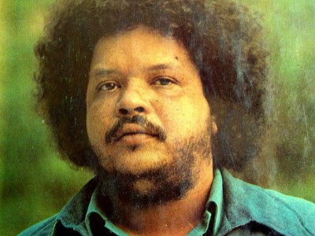
Tribalistas
Tribalistas é um trio musical e supergrupo brasileiro de MPB composto por Arnaldo Antunes, Carlinhos Brown e Marisa Monte. A música mais conhecida do trio é Velha Infância, de 2002.
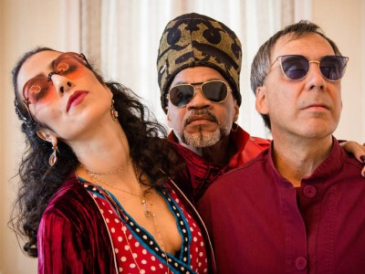Zé Ramalho
José Ramalho Neto, mais conhecido como Zé Ramalho, é um cantor, compositor e músico brasileiro. Suas músicas mais importantes são Avôhai e Sinônimos, que também é interpretada pela dupla Xitãozinho & Xororó.
AvôhaiSinônimos
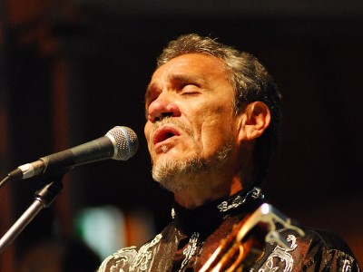